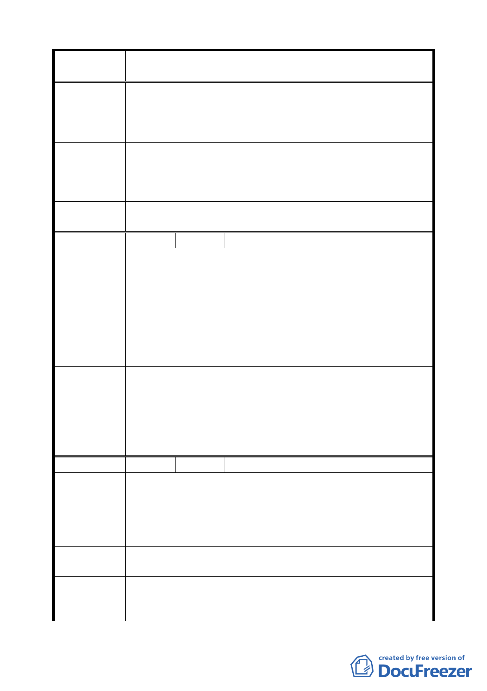

案 名 臺北市文山區都市計畫通盤檢討（主要計畫）案
地號計 12 筆，面積 14585 平方公尺）及國有財產局經管
政大段四小段 534 地號，面積 251 平方公尺（變更後由
本校向該局撥用取得）變更為政治大學用地。
二、其餘維持原使用分區。
專案小組
審查結論
（94.11.24）
政治大學所管有之學生宿舍用地及政大段 4 小段 534 地號國
有財產局土地，同意變更為大學用地（供政治大學使用）；至
於其餘私有土地，仍維持原計畫，先請國立政治大學完成土
地價購事宜後，再依法辦理都市計畫變更。
委員會議
決議
依專案小組審查結論辦理，並刪除本案「主政 1」。
編 號 ２８ 陳情人 國立政治大學（09430082700）
建議位置：老泉段一小段 154、155 地號內約 470 平方公尺土
地。
陳 情 理 由 建議理由：
（ 政 大 ） 養工處「老泉里壓力箱涵工程」已完工使用，用地部分尚未
辦理都市計畫變更及撥用手續，為管用合一，請配合辦理計
畫變更。
建議辦法
一、政治大學用地變更為沈砂池用地。
二、都市計畫確定後由市府權責單位依規定辦理撥用。
專案小組
審查結論
（94.7.11）
請市府都市發展局確認產權範圍後，同意變更為「沈砂池用
地」。
委員會議
決議
本案土地經市府納入「老泉里計畫案」之擴大計畫案內，考
量該排水溝用地劃設之完整性，納入該案變更為「排水溝用
地」。
編 號 ２９ 陳情人 國立政治大學（09430082700）
建議位置：政大段二小段 661-4 地號內約 100 平方公尺土地。
陳情理由
（政大）
建議理由：
「指南里供水計畫」第三配水池暨加壓站已興建完成及使
用，用地部分尚未辦理都市計畫變更及撥用手續，為管用合
一，請配合辦理計畫變更。
建議辦法
一、政治大學用地變更為自來水加壓站用地。
二、都市計畫確定後由市府權責單位依規定辦理撥用。
專案小組
審查結論
（94.7.11）
請自來水處將地籍資料送市府都市發展局確認範圍後，同意
變更為「自來水用地」。
一九